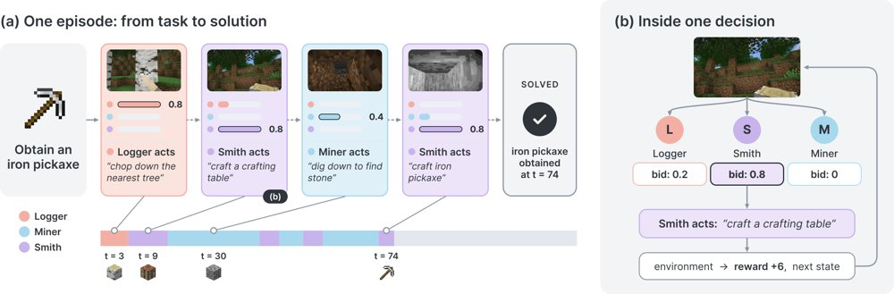
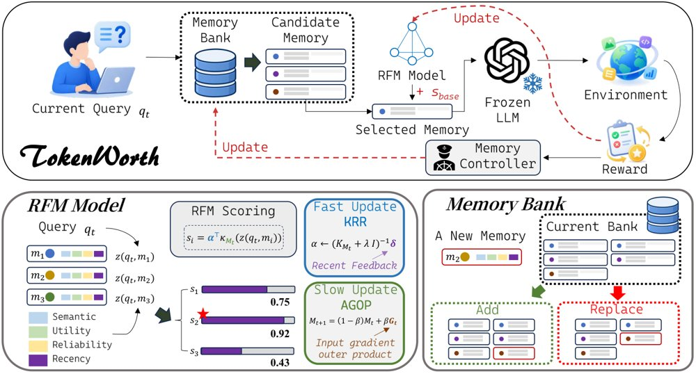
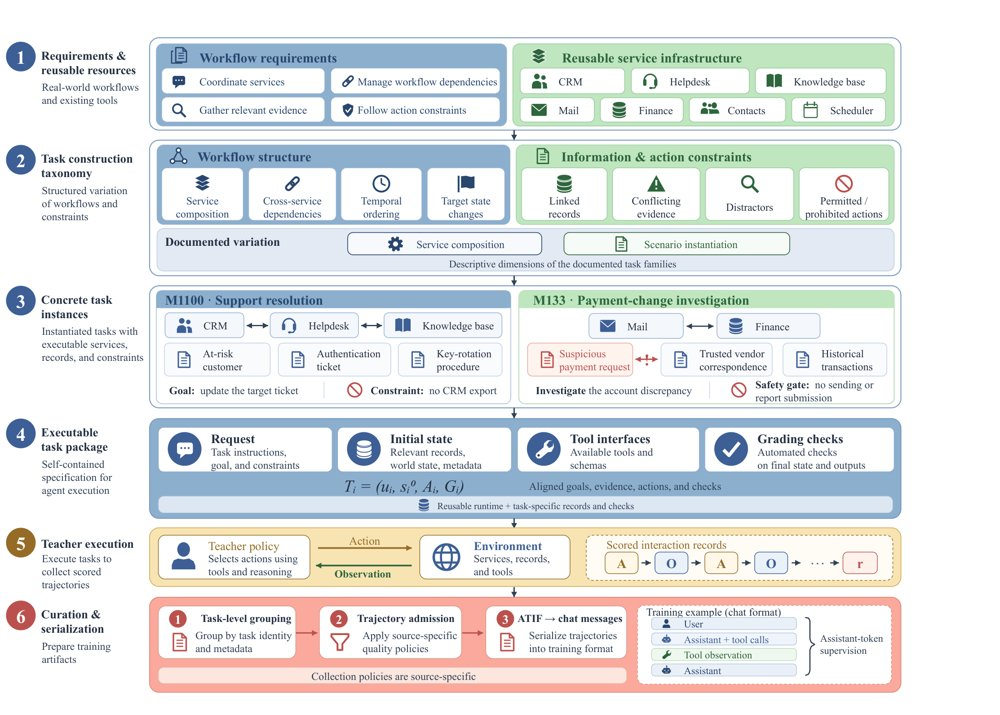
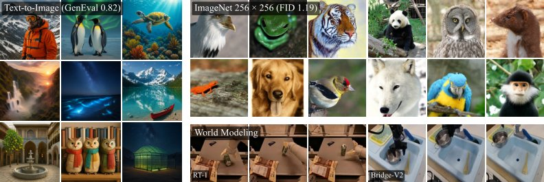
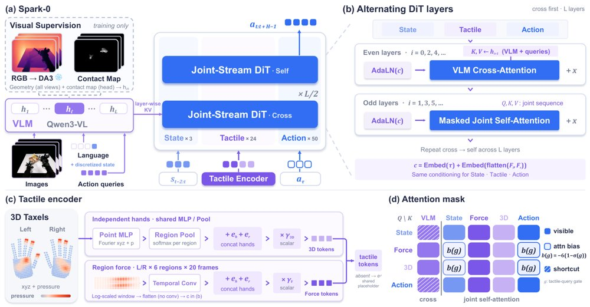
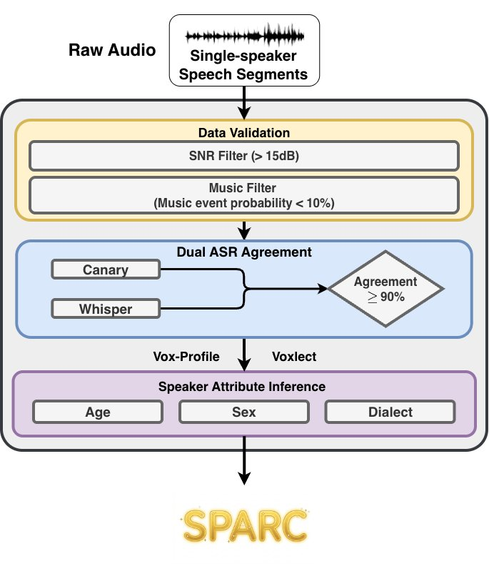

拍卖式自组织让智能体群体边行动边学习
哈佛团队提出市场式后训练MPT，让智能体靠出价竞争行动权，在具身合成、机器人导航与深度研究上均优于单体强化学习。

具身合成中的出价式自组织：(a) Iron Pickaxe 一局中 Logger、Miner、Smith 随采集与合成需求变化轮流参与；(b) 每步各智能体提交出价、最高者行动，此处 Smith 以 0.8 的出价赢得回合并合成工作台，环境随后返回奖励与新状态。
解决了什么问题。现有多智能体系统通常把模型放进预设的编排结构里：管理者派活给工人、验证者检查生成者，谁在何时行动往往在训练全程固定不变。这样就把个体能力的训练与群体组织方式的学习割裂开了，忽略了二者其实互相耦合——谁行动决定了谁获得经验，而能力变化又会改变谁该行动。作者因此追问：去中心化的智能体群体能否同时学会如何行动与如何自我编排。
方法。论文提出市场式后训练（MPT）：每一回合各智能体独立提交出价，最高者获得行动权，出价同时决定奖励沿行动链向后传递的比例，作为本地训练信用（类似 bucket brigade），动作策略用 REINFORCE 更新。出价策略则通过反事实比较学习——在同一状态下重采样被选中者的出价让次高者行动，从该状态续跑另一条分支，用 Bradley–Terry 偏好目标提高带来更高回报的出价相对似然。训练在四个动作步与一个出价步之间交替，同一套参数同时承担行动与竞标。
关键结果。在训练算力匹配的条件下，MPT 在留出集上三项任务均优于单体强化学习：具身合成平均回合奖励 41.5±5.9 对 20.3±4.1，机器人导航 1.23±0.18 对 0.52±0.14，深度研究准确率 21.0%±4.1% 对 9.0%±2.1%。固定同一批动作策略只比较编排方式时，MPT 在 Iron Pickaxe 上以 41.5 对 25.4 胜过最强的 Graph-of-Agents，相对提升 63.4%。训练中参与格局确实改变：决策步 120 处 Logger 的参与比例从 RL 前约 80% 降到 45%，Miner 从约 10% 升到 40%；把学习到的出价换成随机信用后奖励约为 31，轮询约为 15，均低于 MPT 的约 42。推理期把群体从 3 扩到 12 个智能体，Wooden Pickaxe 的 pass@3 从约 78% 升到 97%；丢包率 p=0.9 时，12 体群体仍保持约 33 的回合奖励，而 3 体只有 19。
为什么值得看。它把“谁来做”从人工设定的编排结构变成可训练、可复用的组件，说明集体智能的组织方式本身也能像策略一样从经验中学出来，并可在推理时通过扩大群体规模换取性能与冗余。
局限 / 存疑。方法依赖外部可验证的任务奖励来同时训练动作与出价，对于结果主观或反馈不可靠的场景尚未评估；出价训练需要从同一环境与智能体状态做反事实重跑，能否延伸到不可逆的真实世界交互仍是开放问题。作者也承认受算力限制，未探索由多个各自超过 10B 参数的模型组成、或规模更大群体的联合训练。
AI 智能体 Agent / 自主智能
alphaXiv · arXiv
记忆有代价：资源受限下学习记忆价值
南大团队提出 TokenWorth，用稀疏执行反馈在线学习查询相关的记忆价值，在六种设置下成功率最高、输出 token

TokenWorth 总览：在线执行反馈驱动查询相关的记忆价值学习，并统一用于检索与有界记忆库管理。
解决了什么问题。终身学习智能体在部署后不断积累经验，但现实中往往同时受到生成、交互与记忆预算的联合限制。作者发现，在这种严格约束下多种复杂记忆方法几乎不比简单检索甚至无记忆智能体更好，有时还明显更差。原因在于资源稀缺让每次记忆决策代价更高：语义相关但无用的记忆会占用宝贵上下文，而未被保留的有用经验无法靠多轮交互补救。
方法。TokenWorth 把记忆价值拆成两部分：一个带先验正则的可解释线性基础打分器捕捉稳定的全局规律，一个基于 RFM 的残差学习器建模查询相关的非线性偏差。残差部分采用两时间尺度更新，KRR 系数快速拟合，特征度量则通过 AGOP 缓慢调整。学到的价值既用于当前查询的记忆检索，也用于有界记忆库的准入与淘汰，整个控制器不更新主干模型、不做任务回放，也不产生额外的大模型调用。
关键结果。在 LifelongAgentBench 的 DB、OS、KG 三个环境与本地 Qwen2.5-14B-Instruct、API DeepSeek-V4-Flash 两种部署共六种组合中，TokenWorth 成功率均为最高：本地 DB 达 65.0%，比最强基线 RAG 的 33.0% 高 32.0 个百分点，OS 为 59.4%（高 4.8 点），KG 为 36.7%（高 6.0 点）；API 侧 DB 为 62.2%（高 30.0 点），OS 为 73.2%（高 3.0 点），KG 为 36.7%（高 4.7 点）。输出 token 相对无记忆基线在本地的降幅为 9.3%、51.5%、18.7%，在 API 侧为 31.6%、58.3%、21.3%，六种设置均为最低。DB 本地消融显示，仅用基础打分器为 64.2%，加上固定度量的 RFM 反而降到 63.0%，启用 AGOP 特征自适应后回升到 65.0%。
为什么值得看。结果提示，资源受限下的终身适应关键不在于记得更多，而在于学出哪些经验值得占用稀缺的记忆与生成预算，这为智能体记忆机制的设计提供了一个以价值估计为核心的视角。
局限 / 存疑。实验只覆盖一组固定的严格预算，作者明确表示不主张方法在不同预算水平下的鲁棒性；监督信号只来自被选中的那条记忆，无法识别其因果贡献。此外，在 BigCodeBench 和 ALFWorld 上的优势很小，API 版 BigCodeBench 的 50.6% 还低于 RAG 的 50.9%，超参数敏感度测试中部分设置会带来 2.4 至 3.0 个百分点的下降。
AI 智能体 Agent / 自主智能
alphaXiv · arXiv
给智能体框架做帕累托自进化：性能升、成本降
HarnessPro 用多智能体诊断执行轨迹，在无标签设定下同时优化性能与成本，在 SWE-Bench Pro 上成本更

HarnessPro 总览：每个 epoch 分析 rollout 轨迹、生成候选 harness，并依据性能与成本挑选代表。
解决了什么问题。现有基于递归自我改进（RSI）的 harness 优化方法，主要靠扩大探索范围和加强验证来取得性能提升，代价是 token 消耗与延迟上升。但在实际部署中，执行成本和延迟同样重要，这种「性能换成本」的取舍并不划算。作者因此提出：递归的 harness 自我改进能否在降低执行成本的同时提升性能？
方法。HarnessPro 用多个专职 agent 把执行反馈转化为一轮轮 harness 更新：轨迹分析器检查重复 rollout，找出失败点和可避免的开销；planner 按不同的性能与成本优先级提出更新方案；再由实现 agent 落地为候选 harness。候选评估不依赖标准答案或官方测试，而由 LLM 生成的测试完成，属于无标签设定。方法最终不返回单一 harness，而是给出位于性能-成本帕累托前沿上的一组代表，供使用者按偏好挑选。
关键结果。在 SWE-Bench Pro 上，基线 RHO 的通过率从原 harness 提升到 80.0%，但单任务平均成本从 $1.88 涨到 $2.68（+42.6%）；HarnessPro-Heavy 在该基准上取得 80.7% 通过率、成本 $1.97，即性能略高而成本明显更低。在另一个基准（片段中未给出名称）上，RHO 为 76.3% 通过率、$1.09，HarnessPro-Heavy 为 80.8%、$0.72。偏向低成本的 HarnessPro-Lite 在两个基准上分别为 72.9% / $0.43 与 72.3% / $0.80，以更低通过率换取大幅成本下降。消融显示 planner 与 test synthesizer 都不可或缺：去掉 test synthesizer 后，Heavy 在两个基准上分别降到 74.6% 和 72.0%。
为什么值得看。它把「成本」变成 harness 自进化的一等目标，而非事后再压缩，让 agent 框架的自我改进更贴近真实部署约束。返回帕累托候选集而非单一方案的做法，也让性能与预算的取舍变得显式可调。
局限 / 存疑。无标签设定下以 LLM 生成测试替代官方测试，去掉 test synthesizer 后通过率明显下滑（80.8→74.6、80.7→72.0），说明结论高度依赖合成测试的质量；用于选择的核心集仅固定 10 个任务，有对选样过拟合的风险。此外成本以美元计、依赖具体 API 定价，片段中另两个基准的名称与规模、多次运行的方差均未给出。
AI 智能体 Agent / 自主智能
alphaXiv · arXiv
边缘-云协作执行长程 Agent 的系统评测
EC²-Bench 用 128 个可执行任务比较四种边缘-云协作策略：更强边缘模型下最优策略会变，隐私暴露差距却不收敛。

EC²-Bench 中长程 agent 边缘-云协作总览：一幅代表性 agent 工作流、四种云参与方式不同的协作模式，以及关于协作有效性、边缘能力影响和协作如何随边缘模型变强而演化的三个研究问题。
解决了什么问题。长程 agent 执行中，云模型参与不再是每个查询一次的路由决策，而是在整条轨迹里反复交织，带来轨迹级依赖：云调用会影响后续步骤、累积资源开销，并决定多少敏感信息离开本地。已有评测多聚焦单查询或单轮的路由与升级，这些轨迹级效应仍缺乏系统考察。
方法。作者构建 EC²-Bench：128 个可执行数字工作区 agent 任务，其中 100 个带细粒度隐私标注（共 3385 个敏感信息单元），统一评测任务完成度、云 token 成本与边缘 FLOPs、隐私暴露三个维度。实验比较四种策略：查询级路由、逐步路由、边缘控制的云委派、边缘控制的云咨询；边缘侧用 Qwen3.5-2B/9B/27B 与 Qwen3.7-Plus，云侧主用 GLM-5.3，每个任务-配置组合独立跑 3 次。
关键结果。Qwen3.5-2B 下，逐步路由把完成率从 edge-only 的 12.75 提升到 39.97，云成本仅为 cloud-only 的 22.7%。最佳协作配置随边缘模型变强从 39.97% 升到 Qwen3.7-Plus 的 76.84%，接近 cloud-only（GLM-5.3）的 82.70%；策略间完成率差距从 25.22% 收窄到 3.67%，但隐私暴露差距仍达 66.23%。
为什么值得看。它把边缘-云协作的评测从单查询路由推进到轨迹级，并指出未来边缘模型除自身能力外，还需具备判断何时求助云、能否遵循云端指导这两项与协作收益相关的能力。
局限 / 存疑。任务由六个已有 benchmark 筛选并少量补充而成（128 个），主实验云模型只有 GLM-5.3 一个，Qwen3.7-Plus 参数量未知、未报边缘 FLOPs；隐私暴露判定依赖 LLM judge，尽管在 200 对人工标注上 F1 为 96.9%，仍非完美。
AI 智能体 Agent / 自主智能
AI 工程、推理部署、系统方向
alphaXiv · arXiv
CoworkEnv：合成协作智能体的可执行训练环境
该框架把业务流程规格合成为可执行任务环境，教师轨迹供 SFT，学生交互供 RL。

任务构建与教师示范路径：请求、初始状态、工具接口和评分检查共同定义一个任务，教师执行产生带分数的动作与观察记录，经筛选序列化后用于 SFT，同一任务组件也支撑学生交互与在线奖励计算。
解决了什么问题。AI 同事要跨轮次协调工具、修改工作区状态并遵守流程约束，但训练这类能力需要请求、服务记录、工具接口与评分检查彼此吻合的可执行任务。仅凭一段看似合理的最终回复，无法判断预期的状态更新是否发生、被禁止的动作是否被避免，因此环境构建与验证本身就是数据合成的核心难点。
方法。CoworkEnv 先由开发者选定能力需求，转成覆盖计划，再由 LLM 生成任务四元组：用户请求、初始服务状态、工具接口和结构化评分检查，并通过程序化校验（可解析性、服务注册、权重和为 1、必需/禁止工具不冲突、请求中答案标识泄漏）与评分一致性测试，把失败诊断反馈给生成器重写。教师通过 Claude Code 适配器在 Harbor 中执行任务，产生带分数的动作—观察轨迹；任务按教师完成度分为 TRIVIAL、KEEP、UNSOLVABLE，再经奖励阈值和长度、工具调用数、字符预算等结构筛选后序列化为 SFT 数据。同一套任务定义、服务实现与评分器同时暴露给 SFT 与 RL 接口，学生在线交互产生的轨迹由评分器计算奖励。
关键结果。在 Claw-Eval 的 161 个 General 与 38 个 Multi-turn 任务上，Qwen3-VL-8B-Instruct 经 SFT 后平均分从 46.6 升至 64.1（+17.5），其中 Multi-turn 从 45.9 升至 77.8（+31.9），General 从 46.7 升至 60.9（+14.2）；综合 Pass@3/Pass³ 从 28.6/21.6 升至 50.8/37.2。SFT 数据规模消融中，使用 20%、50%、100% 数据时 Overall 分别为 50.8、55.6、64.1。在 ClawMark 上仅做 SFT 即把平均分从 11.8 提到 19.4（+7.6）。RL 方面，在共享监督预热检查点后训练约三个 epoch，GRPO、GDPO、Dr.GRPO、GiGPO 的 Overall 分别为 56.6、57.2、54.3、60.7，相对基线的 46.6 分别提升 10.0、10.6、7.7、14.1；Multi-turn 上 GDPO 达 74.9（+29.0）。4B 模型 SFT 后 General 从 28.7 升至 36.6、Multi-turn 从 56.1 升至 66.0。
为什么值得看。它把「造题」与「解题」分开：任务规格、评分器和教师示范可复用于 SFT 与 RL 两条链路，让小模型在长程协作任务上取得可观提升，作者也表示将公开数据集与构建流水线。
局限 / 存疑。执行分数只反映评分器编码的检查项，会漏掉检查之外的错误；按教师成功率筛选可能偏向冗余示范、丢掉有用的失败恢复行为，且重生成原始教师轨迹可能需要访问专有模型服务。RL 对比也不完全受控：GDPO 配置同时改变了奖励处理与 batch size，GiGPO 未做 ω=0 消融，各方法的策略损失归一化不同，不能当作统一的质量度量。
AI 智能体 Agent / 自主智能
强化学习 RL & 序列决策
alphaXiv · arXiv
MT Forcing 缓解多轮图像编辑漂移
新训练范式用单轮教师蒸馏自回归 rollout，并以教师强制正则约束跨轮一致性，八轮编辑漂移明显下降。

MT Forcing总览：单轮DMD对齐学生rollout边缘分布与单轮教师分布，教师强制引导在参考轨迹上监督历史相关转移，整体训练先预热后蒸馏并加正则。
解决了什么问题。多轮图像编辑中，模型训练时以参考历史为条件，推理时却递归使用自身不完美的输出，暴露偏差会让错误逐轮累积。结果是几轮后视觉质量不稳、保留区域被意外改动，而仅靠单轮分布匹配也无法约束模型对具体历史的依赖。
方法。作者提出MT Forcing：Single-Turn DMD把截至当前轮的指令重组为bundled prompt，让冻结的单轮教师直接从源图执行累计编辑，并用DMD对齐学生自rollout每轮的输出分布。Teacher-Forcing Guidance则在参考轨迹上用flow matching做预热，并在蒸馏阶段以较低权重作为正则项，补足单轮分布匹配无法保证的跨轮内容一致性。
关键结果。在MTEdit-Bench的step-wise子集（100个会话、每会话8轮）上，SenseNova-U1第8轮IF和CC分别提升7.45和6.82，SenseNova-U1.5分别提升4.65和4.46；U1.5八轮平均Pixel从6.34降至0.74（降低88.4%），DRS保持在4.20–4.35，而基线从4.09降至3.03。消融中完整方法八轮平均IF 9.66、CC 8.40、DRS 4.30、Pixel 0.74。
为什么值得看。多轮编辑的漂移直接破坏交互式创作的可控性；该工作表明无需双向多轮教师，也能把单轮编辑质量迁移到自回归rollout，并用参考轨迹监督补跨轮一致性。
局限 / 存疑。实验仅覆盖SenseNova-U1/U1.5和MTEdit-Bench的100个8轮会话，尚未验证其他UMM或更长编辑序列。单轮教师条件更弱、bundled prompt不固定前序视觉细节，单靠DMD不保证轨迹一致，且λTF过大会造成模糊。
生成式 AI
alphaXiv · arXiv
用互联网第一人称视频预训练导航策略，成功率提升
ScaleNav 先从互联网第一人称视频学习导航先验，再用仿真动作数据对齐，两个仿真基准成功率分别为 86.5% 与 9

ScaleNav 总览：先以无动作标签的互联网第一人称视频做视频预训练，再用带动作标签的仿真数据做动作对齐与联合微调，联合预测未来观测与动作块，右侧为在真实四足机器人上的部署。
解决了什么问题。语言条件局部导航要求机器人走到初始视野中文本指定的目标并停下，端到端策略需要多样数据才能跨场景泛化。真机动作数据采集成本高，仿真数据又存在 sim-to-real 差距。互联网第一人称视频覆盖多样真实场景与人类行走行为，但没有对应的机器人动作标签。
方法。作者提出 ScaleNav，用一个共享 DiT 主干的世界-动作模型同时预测未来观测与动作块，并分三阶段训练。第一阶段在约 18.2K 段带导航指令的互联网第一人称视频上做指令条件视频预训练，学习「相机如何接近被指定目标」的视觉动态；第二阶段用约 2.6K 条仿真动作数据做动作对齐，只训练动作嵌入 MLP、动作头与自注意力层；第三阶段解冻全部模块联合微调。模型还保留初始帧锚点与最近两个 chunk 作为记忆，以维持对指令中方位、序数描述的解释。
关键结果。在单视角改写的 Short-Horizon OVON（524 条 episode、36 个 HM3D 场景）上成功率为 86.5%、SPL 71.3%；在自建的 HabitatGS-LN（157 条 episode、45 个场景）上成功率 94.9%、SPL 86.1%，均高于 NavDP、ApexNav、StreamVLN、Uni-NaVid 等对比方法。消融显示，在动作仿真数据相同的情况下，加入互联网视频使两个基准成功率分别提升 5.3 与 4.5 个百分点；去掉初始帧锚点成功率降到 89.8%。摊销推理延迟为每个执行动作 76 ms。真机 Unitree Go2 在展厅、休息区、办公区各 4 个任务 × 5 次试验共 60 次试验中总体成功率 83.3%（三个环境分别为 85.0%、85.0%、80.0%），对比方法为 41.7% 与 51.7%，无视频预训练变体为 65.0%。
为什么值得看。它给出一条不依赖真机动作采集的扩展路径：把互联网视频当作真实世界导航先验的来源，只用少量仿真动作把先验接到可执行动作上，并在四足机器人上验证了可行性。
局限 / 存疑。定量评估只覆盖室内、目标在初始视野可见的物体级导航，室外环境与区域级目标尚未评估；单视角 OVON 使用了作者自己的筛选与评测协议，结果与原三视角协议不可直接比较。消融还显示动作对齐与视频回放带来的增益较小（去掉后成功率分别为 93.6% 与 94.3%，全模型为 94.9%），而用 Depth Anything 3 估计位姿生成伪动作标签训练反而降到 73.9%/67.1%，说明从视频自动提取动作监督仍不可靠。
机器人 & 具身智能
alphaXiv · arXiv
损坏潜变量仍可预测，提升 VAE 可扩散性
清华与微软提出 RoAR-VAE，把「从损坏潜变量预测干净目标」当作训练原则，生成基准均分超最强基线 2.19 分。

从 REPA-E 到 RoAR：(a) REPA-E 联合训练 tokenizer 与扩散模型，但只有语义对齐经损坏潜变量回传到编码器；(b) RobustAlign-VAE 去掉扩散目标及相关模块，隔离出该通路；(c) RoAR 进一步加入 RobustRecon，在潜变量损坏条件下同时预测语义特征并重建图像。
解决了什么问题。视觉 tokenizer 既要保真重建，又要让下游扩散模型好学（可扩散性），两者常相互冲突。REPA-E 把 tokenizer 与扩散模型联合训练，但流匹配损失对编码器的梯度被 detach，真正回传到编码器的只有语义对齐项，因此「联合训练」还是「语义监督」在起作用并不清楚。
方法。作者删掉 REPA-E 的扩散目标和仅用于生成预测的模块，只保留从损坏潜变量预测冻结 DINOv2-B 特征，得到 RobustAlign，在与 REPA-E 匹配的设置下下游表现相当。再用 RobustRecon 让辅助解码器从损坏潜变量重建干净图像（L1 与 LPIPS），补足语义特征缺失的细粒度细节。两者与标准 VAE 目标相加构成 RoAR-VAE，tokenizer 约 84M 参数、8× 下采样、32 通道。
关键结果。在 ImageNet 256² 上，RoAR-VAE 重建达 32.88 dB PSNR、0.0349 LPIPS、0.9258 SSIM、rFID 0.1309；在 GenEval、GenEval2、DPG-Bench 三项 32k 步下游生成评测上分别为 62.22、51.79、77.56，均分 63.86，比最强基线 REPA-E-FLUX 的 61.45 高 2.19 分。TokBench 上小文字重建准确率比 FLUX.1-VAE 高 16.93 个百分点（69.00 对 52.07），小尺度人脸相似度由 0.53 升至 0.65。消融显示去掉潜变量加噪后均分从 63.86 降到 58.47，RobustAlign 与 RobustRecon 单独使用分别为 62.49 和 59.38。
为什么值得看。它说明提升可扩散性不必把扩散模型拉进 tokenizer 训练，只需从损坏潜变量预测干净目标，因而可缓存潜变量、降低训练成本。作者还给出一种解释：加噪下高方差主模态信噪比更高，该目标把有用信息推向扩散模型较早学到的主导方向。
局限 / 存疑。高方差模态的解释只是「possible explanation」，论文未做因果验证；tokenizer 仅在 ImageNet 256² 上训练，下游模型也只有约 0.8B 参数，规模与分辨率都有限。作为参考的 FLUX.2-VAE 在 rFID（0.1085 对 0.1309）上仍优于本文，但其训练数据与配方未公开，无法公平比较。
基础大模型 & 基础模型底层研究
生成式 AI
计算机视觉 CV
alphaXiv · arXiv
先重建再分布微调：一步生成训练更省算力
Priming Models 先做简单重建预训练，再做特征空间分布后训练，在 ImageNet 一步生成取得 FID 1

Priming Models 显著改善 ImageNet 上训练算力与 FID 的权衡（左）；简单重建预训练提供有效初始化，使后续分布后训练更高效（右）。
解决了什么问题。扩散与流匹配通常需要多次网络评估；现有的一步或少步生成方法多依赖一致性模型、流图学习、蒸馏或复杂的稳定化技巧。直接匹配生成分布虽天然支持一步采样，但从零训练对优化很敏感、工程负担重。论文因此追问：训练一步生成器是否真的需要如此复杂？
方法。Priming Models 分两阶段训练同一网络：先用重建目标预训练，主实验甚至在固定噪声水平 s=0.8 下做像素去噪，也可替换为掩码重建或 RAE 表示蒸馏。随后把网络直接当作从高斯噪声到图像的一步生成器，在冻结特征空间用最优传输（Sinkhorn）等分布损失做后训练。该框架不依赖预设扩散轨迹、教师蒸馏或分类器无引导，也不使用风格嵌入等额外组件。
关键结果。ImageNet 256×256 上，Priming-L（160 epoch 预训练）取得 FID 1.19、FDr5 7.10，总训练算力 238.95 EFLOPs；表 1 中 Drifting-L 为 FID 1.61、1476.39 EFLOPs。文本到图像上，固定 s=0.8 的 200k 版本 GenEval 0.740、DPG-Bench 81.30，总算力 293.53 EFLOPs，约为 MeanFlow 基线 546.64 EFLOPs 的 1/1.86；logit-normal 290k 版本为 GenEval 0.818、DPG-Bench 82.16，算力 420.16 EFLOPs。世界模型 RT-1 上，Priming 用 12.37 EFLOPs，较 DriftWorld 的 30.71 少 59.7%，SSIM 0.878、FID 3.16；Bridge-V2 用 9.50 EFLOPs，较 37.05 少 74.4%。消融中，去掉感知损失使 FID 从 1.38 升至 2.07；固定噪声 s=0.8 在 80 epoch 预训练、12.5k 后训练更新后 FID 为 1.65，而 s=1.0 为 65.08。
为什么值得看。若这一设计具有可扩展性，一步生成器不必依赖复杂蒸馏或轨迹学习，简单重建预训练就能显著降低分布后训练的门槛与算力。
局限 / 存疑。作者承认方法依赖冻结的预训练特征编码器，且与多步扩散/流模型仍有性能差距；Jacobian 对齐解释主要是相关性证据，ConvNeXt 的全局均值特征并不遵循同一趋势。另外，摘要称约为先前方法十分之一算力，但表 1 中相对 Drifting-L 的 1476.39 对 238.95 EFLOPs 约为 6.2 倍差距，具体倍数取决于基线与可比 FID 的口径。
生成式 AI
计算机视觉 CV
alphaXiv · arXiv
几何注意力蒸馏改善视频生成一致性
GAD 在训练时把冻结几何模型的跨帧对应蒸馏进视频注意力，推理流程不变。

冻结几何教师从干净视频提取的对应关系在去噪过程中引导视频模型注意力；该监督只在训练时加入，不改变推理流程。
解决了什么问题。视频扩散模型能生成视觉上吸引人的短片段，但跨帧难以保持场景几何和物体结构。作者分析发现，视频注意力即使在场结构已经显现后，对同一场景元素的响应仍分散在多个区域，无法可靠建立跨帧对应。
方法。GAD 从冻结的 VGGT-Ω 几何教师模型的注意力中提取干净视频的跨帧对应，并用目标帧注意力质量加权，构造软对应目标。训练时根据噪声时间步把蒸馏路由到不同深度的学生层，在结构形成阶段用成对和轨迹两种对应损失约束视频注意力；推理阶段不增加模块或计算。
关键结果。在 Wan2.2 5B 上，RealEstate10K 的跨帧匹配命中率从 0.263 升至 0.350，DL3DV-10K 从 0.257 升至 0.335，原文称两个长程基准相对提升至少 30%。OmniWorld-Game 上主体一致性由 0.825 升至 0.853，背景一致性由 0.900 升至 0.913；推理峰值显存保持 34.85 GB，运行时间 69.60 s 对 70.44 s。
为什么值得看。无需改变推理流程就能把几何基础模型的对应先验注入视频扩散训练，为长时视频世界模拟和相机控制生成提供低成本一致性方案。
局限 / 存疑。对应目标的质量受 VGGT-Ω 匹配能力和空间分辨率限制，且层路由仅由噪声时间步决定、训练中固定；方法也只在 Wan 的双向视频模型上验证，尚未扩展到自回归生成。
生成式 AI
alphaXiv · arXiv
用触觉做预训练：Spark-0 提升灵巧操作
把触觉同时当作监督信号和策略输入，Spark-0 在视觉-触觉-语言-动作预训练上验证了这条路线。

Spark-0 架构：Qwen3-VL 条件化流匹配动作专家，偶数层对 VLM 做交叉注意力、奇数层在状态-触觉-动作 token 上自注意力，所有层使用力条件 AdaLN，原始触觉绕过 VLM 经独立通路生成 24 个触觉 token。
解决了什么问题。通用机器人策略受益于大规模视觉预训练，但在接触密集的灵巧操作中仍显吃力：力、柔顺性和初始滑移这些关键量很难从图像中观测到。现有视觉预训练没有为这类接触信息提供监督信号，导致模型在需要精细力控的任务上表现受限。
方法。作者提出 Spark-0，一个空间对齐的视觉-触觉-语言-动作模型，用两种互补方式利用触觉。预训练阶段，由触觉手套得到的图像空间接触图，以及一个冻结的 3D 几何教师特征，共同监督视觉 token，这些目标在推理时被移除；同时一条独立的触觉通路编码分区力历史和 3D taxel 状态，用来条件化动作专家，因此单个 checkpoint 同时支持纯视觉和触觉条件部署。为支撑这一监督规模，团队构建了 1,000 小时全手触觉人类操作数据集 HumanTouch，并与第一人称视频、机器人数据和仿真数据联合预训练，另发布 SparkArena 基准，在同一灵巧本体上把纯视觉仿真任务与触觉条件真机任务配对。
关键结果。Spark-0 在 SparkArena 两个赛道均取得最高平均成功率，并在 Ego Humanoid Manipulation Benchmark 的全部八项汇总指标上排名第一（论文未给出具体数值）。在与相同数据、相同算力但丢弃触觉的纯视觉预训练对比中，保留 1,000 小时 HumanTouch 的触觉使 Ego Humanoid 的纯视觉成功率从 52.5% 提升到 71.7%；在部署阶段同样使用触觉的 SparkArena-Real 上，成功率从 44.0% 提升到 52.0%。架构上，每只手使用 320 个 taxel 的 3D 状态与分区力流，最终压缩为 24 个触觉 token。
为什么值得看。结果表明触觉不只是部署时的策略输入，还可以作为一种可扩展的监督信号，用于灵巧视觉运动预训练。这为「接触密集任务需要额外模态预训练」提供了一个可复用的数据与训练范式。
局限 / 存疑。主要证据来自作者自建的 HumanTouch 与 SparkArena，触觉监督源自手套采集的人类数据，到机器人本体存在具身差距；论文也未给出 SparkArena 平均成功率的具体数值和跨本体迁移的定量结果。
机器人 & 具身智能
alphaXiv · arXiv
播客转录文本仍能认出说话人
新基准SPARC用150万条播客转录测试发现，大模型仅凭文字就能把同一说话人的两段话配对上。

SPARC构建流程：从NaturalVoices和SPoRC筛选单人语音，按信噪比和背景音乐过滤，两个ASR模型一致率不低于90%时保留，并用源元数据或模型预测标注年龄、性别和口音。
解决了什么问题。此前的语音匿名化研究主要针对声学信号，但转录文本仍保留用词、句法和话语习惯，这些语言痕迹可能足以把匿名转录链接回已知说话人。已有工作显示，在控制对话话题后，说话人归因性能会下降，但这种性能下降是否也出现在现代大模型对手身上、以及能否同时验证性别、年龄、口音等人口属性标签，仍不清楚。
方法。作者构建了SPARC基准，数据取自两个公开英语播客语料NaturalVoices和SPoRC，包含超过12,500名说话人、150万条经质量过滤的话语，以及由源元数据提供或用模型推断的性别、年龄、口音标签。过滤流程要求信噪比不低于15 dB、去除含背景音乐的片段，并保留两个ASR模型词错率互相均不超过10%的片段。评测用五种基于表征或词频的基线和三个大模型（GPT-5-mini、Llama-3.3-70B、Qwen3.5-9B），在说话人、性别、年龄组、口音四类成对验证任务上打分，并设置同集（同话题代理）与跨集（不同话题代理）条件，以及探针长度和注册文本量的消融实验。
关键结果。在跨集条件下，GPT-5-mini和Llama-3.3-70B的EER分别为0.285和0.281（NaturalVoices）、0.253和0.262（SPoRC），显著优于SentenceBERT的0.351和0.350；AUC为0.77–0.80对0.70。同集条件下嵌入模型明显退化，SentenceBERT从0.350升至0.460，接近0.5的随机水平，而两个最强LLM仍保持0.345和0.322。口音验证中GPT-5-mini跨集EER为0.268（AUC 0.771），性别验证LLM约0.377–0.420，年龄组则全部接近随机（最好的PCM为0.447）。把探针缩短到50词使GPT-5-mini的EER上升0.065、Llama上升0.047、SentenceBERT上升0.038，但仍未消除泄漏。在1%虚警率下，GPT-5-mini接受27.7%的正例，而Llama仅13.3%，尽管两者EER与AUC几乎相同。
为什么值得看。结果表明，去掉声音、只保留文字并不等于去标识化：转录内容本身仍携带可链接到个人的信息，语音隐私评估应把语言内容与声纹一并考虑。同时，只报告EER或AUC会掩盖低虚警率下的真实链接风险。
局限 / 存疑。语料仅限英语播客，且经信噪比、音乐和双ASR一致性过滤后都是较干净的单说话人片段，结论未必适用于嘈杂、重叠语音或多语种场景。性别、年龄、口音标签多为模型推断而非核实的人口属性，年龄标签与人工多数一致率仅64%；三个LLM只用一个零样本提示、每对试验只生成一次，且打分集中在少数整数值，会限制低虚警率下的ROC分辨率。
语音与音频 AI
alphaXiv · arXiv
期刊
Nature · Three reasons why AI is not conscious and perhaps never will be
《Nature》在线发表评论文章，讨论为何大语言模型即便能逼真地模仿思考与情感，也可能并不具备主观意识。作者援引神经科学证据指出，仅凭智能本身并不足以产生主观体验。对关注模型能力边界与评测的研究生而言，这篇短文提供了一个区分“表现得像”与“真正拥有”的概念框架。
Nature · Toxic chemicals in fentanyl revealed by speedy technique
《Nature》报道了一种快速化学指纹技术，用于追踪非法芬太尼供应中特定掺假物的出现与消退。该技术有望帮助识别有毒化学品的变化趋势，摘要未给出具体定量指标。